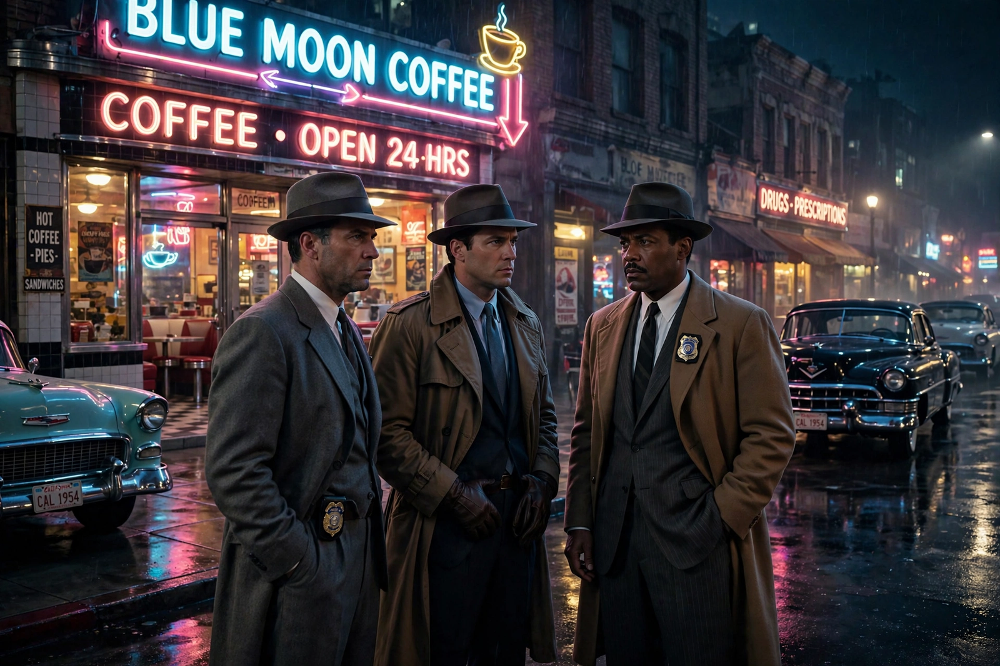

L.A. Confidential
L.A. Confidential is a 1997 American neo-noir crime film directed, produced and co-written by Curtis Hanson, based on the 1990 novel of the same name by James Ellroy. Set in 1950s Los Angeles in the wake of mob boss Mickey Cohen's imprisonment, it intertwines three very different LAPD officers — the ambitious, by-the-book Ed Exley (Guy Pearce), the violent enforcer Bud White (Russell Crowe) and the celebrity-hungry Jack Vincennes (Kevin Spacey) — in the investigation of a mass shooting at the Nite Owl coffee shop. Kim Basinger won an Academy Award for her role as call girl Lynn Bracken.

| L.A. Confidential | |
|---|---|
| Directed by | Curtis Hanson |
| Screenplay | Brian Helgeland, Curtis Hanson |
| Based on | L.A. Confidential (1990) by James Ellroy |
| Starring | Kevin Spacey, Russell Crowe, Guy Pearce, Kim Basinger, Danny DeVito |
| Cinematography | Dante Spinotti |
| Released | 1997 (Warner Bros.) |
| Box office | $126.2 million |
Plot
The arrest of Cohen leaves a vacuum in the city's heroin trade. After the brutal "Bloody Christmas" beating of prisoners stains the department, the Nite Owl murders — whose victims include a disgraced ex-cop — pull Exley, White and Vincennes into separate threads that converge on corruption at the top of the LAPD itself, prostitution rings cutting call girls to resemble movie stars, and a struggle to control the heroin supply. The truth is buried in an official hero-narrative: the department honours Exley for killing the guilty, including men he knows framed the case closed.
Reception
Premiering at Cannes, the film was a critical triumph, nominated for nine Academy Awards and winning two — Best Supporting Actress (Basinger) and Best Adapted Screenplay — in the year Titanic swept most categories. It revived widespread interest in Ellroy and in Los Angeles noir, and was selected for the National Film Registry in 2015. Critics praised Hanson's recreation of 1950s Los Angeles and the ensemble cast, which introduced Crowe and Pearce to Hollywood.
See also
Recreated from memory as part of the muse-webcrawl project.